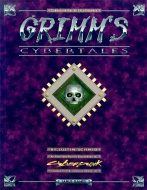

|  | Fiche technique |
| Supplément pour le jeu de rôles Cyberpunk 2020, édité par Ianus Games (Dream Pod 9) (1993) | |
| Langue | Anglais |
| Thème | Alternate Reality : du mysticisme dans Cyberpunk |
| Qualité du background | 5 / 5 |
| Qualité des scénarii | - |
| Qualité des règles | 4 / 5 |
| Qualité des illustrations | 4 / 5 |
| Qualité de l'écriture | 5 / 5 |
Ianus Games a su surprendre, car après la sortie de Night's Edge, rien ne laissait supposer une telle évolution de la gamme. Ce supplément fait partie des Alternate Realities tout comme Night's Edge, Dark Metropolis, Sub Attica et Blood Lust. Ce supplément est bourré d'idées et de schémas de règles pour gérer des situations donnant enfin une dimension humaine et tragique à Cyberpunk. En vrac, on y parle du stress et de son impact sur la vie quotidienne, de la cyberpsychose et des troubles mentaux. Cette section terminée, on entre dans le vif du sujet avec une grosse partie sur les sectes et différents cultes dangereux, le nouveau-vaudou, les croquemitaines de 2020 (assassins, drogués, terroristes...), les univers virtuels, le sommeil et les rêves, ainsi que la sorcellerie et les différentes magies. Comme on peut le voir, il y a à boire et à manger dans ce supplément copieux. Personnellement j'ai adoré, même si de nombreux éléments ne sont que des suggestions et doivent être retravaillés. En effet, la persistance de vieux mythes (le croque-mitaine) et la resurgence d'anciennes croyances (vaudou, magie...) peut être la source d'aventures prodigieusement riches, dans un monde de haute-technologie où les gens se raccrochent à leur superstition. Ce supplément est réellement excellent.
{kind=link}